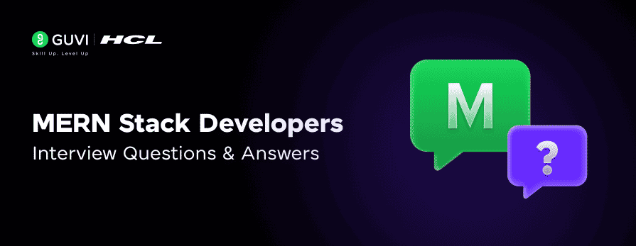

By Lukesh S
Feb 26, 2026 | 9 Min Read | 92975 Views
(Last Updated)
Hey, so you’ve got a MERN stack interview coming up, or you’re preparing for one, and you’re wondering: “Do I actually know enough to walk in there with confidence?”
Here’s the honest truth: most candidates know the basics. They can explain what MongoDB is. They know React renders components. But the developers who actually get hired? They understand why things work the way they do, they’ve broken things while building projects, and they can back up every answer with a real example.
That’s exactly what this guide is built for. We’ve put together 35 of the most asked MERN stack interview questions, from the “tell me what MERN stands for” basics all the way to the sneaky, tricky questions that trip up even experienced developers. Every answer comes with a clear explanation, a code example where it helps, and the kind of context that makes your answer sound like it came from someone who’s actually built with this stack.
So, let’s get started!
MERN stack interviews check whether you understand full-stack JavaScript beyond definitions. Be prepared to explain how React, Node.js, Express, and MongoDB work together, design APIs, manage state, handle authentication, and optimize performance. Interviewers look for practical reasoning, not just what each tool does, but why you chose a particular approach while building real applications.